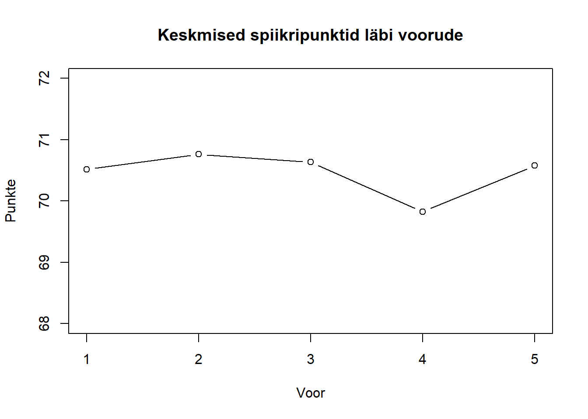
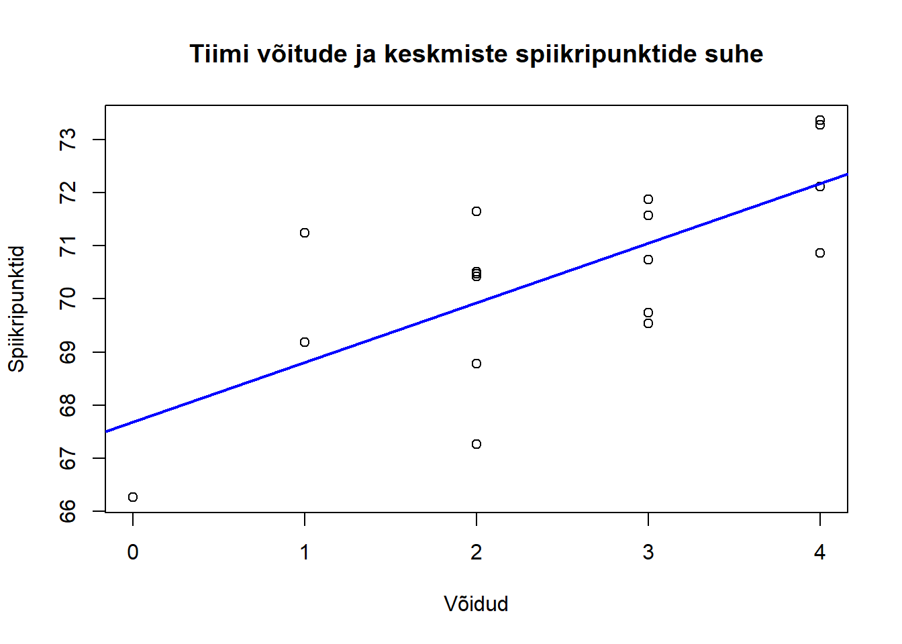

tab = read.csv("https://github.com/carlmartinkeerberg/KKEMV-stat/raw/master/tabs/IIetapp.csv",
sep = ";",
stringsAsFactors = F,
header = F,
encoding = "UTF-8",
na.strings = "")
header = tab[2, c(1:ncol(tab)-1)]
tab = tab[c(3:nrow(tab)), c(1:ncol(tab)-1)]
names(tab) = headerlibrary(knitr)
r1_mean = rowMeans(data.matrix(tab[, c(3:5)]), na.rm = T)
r2_mean = rowMeans(data.matrix(tab[, c(6:8)]), na.rm = T)
r3_mean = rowMeans(data.matrix(tab[, c(9:11)]), na.rm = T)
r4_mean = rowMeans(data.matrix(tab[, c(12:14)]), na.rm = T)
r5_mean = rowMeans(data.matrix(tab[, c(15:17)]), na.rm = T)
total_mean = rowMeans(data.frame(r1_mean, r2_mean, r3_mean, r4_mean, r5_mean), na.rm = T)
diffs = data.frame(unlist(tab[, c(18:32)]), as.numeric(unlist(tab[, 3:17])) - total_mean)
names(diffs) = c("Kohtunik", "Erinevus")
diffs = aggregate(.~Kohtunik, diffs, mean)
diffs = diffs[order(diffs$Erinevus),]
rownames(diffs) = c()
kable(diffs, digits = 2)| Kohtunik | Erinevus |
|---|---|
| Tuule (234) | -1.54 |
| Heiki (45) | -0.78 |
| Tiks (345) | -0.61 |
| Kaspar (123) | -0.33 |
| Maria | -0.29 |
| Küüsmaa | -0.29 |
| Ruul (135) | -0.15 |
| Erik | -0.12 |
| Rauno Kivimägi | -0.08 |
| Lauri | -0.05 |
| Vlad (134) | 0.06 |
| Doris Abe | 0.11 |
| Kätliin (123) | 0.20 |
| Maarja | 0.22 |
| Andreas Tulver | 0.25 |
| Richard | 0.27 |
| Kaur (234) | 0.33 |
| Andres Lestal | 1.01 |
| Uku-Laur | 1.28 |
| Kristin (24) | 1.42 |
hist(total_mean,
main = "Keskmised spiikripunktid",
xlab = "Punktid",
ylab = "Sagedus",
xlim = c(60, 80),
breaks = 6)
abline(v = mean(total_mean, na.rm = T),
col = "blue",
lwd = 2.5)
legend(73, 20,
c("Aritm keskmine"),
lwd = c(2.5),
col = c("blue"))plot(c(mean(r1_mean, na.rm = T), mean(r2_mean, na.rm = T), mean(r3_mean, na.rm = T), mean(r4_mean, na.rm = T), mean(r5_mean, na.rm = T)),
main = "Keskmised spiikripunktid läbi voorude",
xlab = "Voor",
ylab = "Punkte",
ylim = c(68, 72),
type = "b")
ballots = tab[, c(2, 33:47)]
r1_ballots = rowSums(data.matrix(ballots[, c(2:4)]), na.rm = T)
r2_ballots = rowSums(data.matrix(ballots[, c(5:7)]), na.rm = T)
r3_ballots = rowSums(data.matrix(ballots[, c(8:10)]), na.rm = T)
r4_ballots = rowSums(data.matrix(ballots[, c(11:13)]), na.rm = T)
r5_ballots = rowSums(data.matrix(ballots[, c(14:16)]), na.rm = T)
ballots = data.frame(ballots$Team, r1_ballots %/% 2, r2_ballots %/% 2, r3_ballots %/% 2, r4_ballots %/% 2, r5_ballots %/% 2)
ballots = aggregate(.~ballots.Team, ballots, mean)
wins = rowSums(ballots[, -1], na.rm = T)
team_speaks = data.frame(tab$Speaker, tab$Team, total_mean)
team_speaks = aggregate(.~tab.Team, team_speaks, mean)[, -2]
plot(wins, team_speaks$total_mean,
main = "Tiimi võitude ja keskmiste spiikripunktide suhe",
xlab = "Võidud",
ylab = "Spiikripunktid")
abline(lm(team_speaks$total_mean~wins),
col = "blue",
lwd =2)